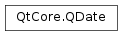

QDate¶
Synopsis¶
Functions¶
- def
__eq__(other) - def
__ge__(other) - def
__gt__(other) - def
__le__(other) - def
__lt__(other) - def
__ne__(other) - def
__reduce__() - def
__repr__() - def
addDays(days) - def
addMonths(months) - def
addYears(years) - def
day() - def
dayOfWeek() - def
dayOfYear() - def
daysInMonth() - def
daysInYear() - def
daysTo(arg__1) - def
getDate(year, month, day) - def
isNull() - def
isValid() - def
month() - def
setDate(year, month, day) - def
toJulianDay() - def
toPython() - def
toString([f=Qt.TextDate]) - def
toString(format) - def
weekNumber() - def
year()
Static functions¶
- def
currentDate() - def
fromJulianDay(jd_) - def
fromString(s, format) - def
fromString(s[, f=Qt.TextDate]) - def
isLeapYear(year) - def
isValid(y, m, d) - def
longDayName(weekday[, type=DateFormat]) - def
longMonthName(month[, type=DateFormat]) - def
shortDayName(weekday[, type=DateFormat]) - def
shortMonthName(month[, type=DateFormat])
Detailed Description¶
The
PySide2.QtCore.QDateclass provides date functions.A
PySide2.QtCore.QDateobject contains a calendar date, i.e. year, month, and day numbers, in the Gregorian calendar. It can read the current date from the system clock. It provides functions for comparing dates, and for manipulating dates. For example, it is possible to add and subtract days, months, and years to dates.A
PySide2.QtCore.QDateobject is typically created by giving the year, month, and day numbers explicitly. Note thatPySide2.QtCore.QDateinterprets two digit years as is, i.e., years 0 - 99. APySide2.QtCore.QDatecan also be constructed with the static functionPySide2.QtCore.QDate.currentDate(), which creates aPySide2.QtCore.QDateobject containing the system clock’s date. An explicit date can also be set usingPySide2.QtCore.QDate.setDate(). ThePySide2.QtCore.QDate.fromString()function returns aPySide2.QtCore.QDategiven a string and a date format which is used to interpret the date within the string.The
PySide2.QtCore.QDate.year(),PySide2.QtCore.QDate.month(), andPySide2.QtCore.QDate.day()functions provide access to the year, month, and day numbers. Also,PySide2.QtCore.QDate.dayOfWeek()andPySide2.QtCore.QDate.dayOfYear()functions are provided. The same information is provided in textual format by thePySide2.QtCore.QDate.toString(),PySide2.QtCore.QDate.shortDayName(),PySide2.QtCore.QDate.longDayName(),PySide2.QtCore.QDate.shortMonthName(), andPySide2.QtCore.QDate.longMonthName()functions.
PySide2.QtCore.QDateprovides a full set of operators to compare twoPySide2.QtCore.QDateobjects where smaller means earlier, and larger means later.You can increment (or decrement) a date by a given number of days using
PySide2.QtCore.QDate.addDays(). Similarly you can usePySide2.QtCore.QDate.addMonths()andPySide2.QtCore.QDate.addYears(). ThePySide2.QtCore.QDate.daysTo()function returns the number of days between two dates.The
PySide2.QtCore.QDate.daysInMonth()andPySide2.QtCore.QDate.daysInYear()functions return how many days there are in this date’s month and year, respectively. ThePySide2.QtCore.QDate.isLeapYear()function indicates whether a date is in a leap year.
Remarks¶
No Year 0¶
There is no year 0. Dates in that year are considered invalid. The year -1 is the year “1 before Christ” or “1 before current era.” The day before 1 January 1 CE is 31 December 1 BCE.
Range of Valid Dates¶
Dates are stored internally as a Julian Day number, an integer count of every day in a contiguous range, with 24 November 4714 BCE in the Gregorian calendar being Julian Day 0 (1 January 4713 BCE in the Julian calendar). As well as being an efficient and accurate way of storing an absolute date, it is suitable for converting a Date into other calendar systems such as Hebrew, Islamic or Chinese. The Julian Day number can be obtained using
QDate.toJulianDay()and can be set usingQDate.fromJulianDay().The range of dates able to be stored by
PySide2.QtCore.QDateas a Julian Day number is for technical reasons limited to between -784350574879 and 784354017364, which means from before 2 billion BCE to after 2 billion CE.
-
class
PySide2.QtCore.QDate¶ -
class
PySide2.QtCore.QDate(QDate) -
class
PySide2.QtCore.QDate(y, m, d) Parameters: - m –
PySide2.QtCore.int - QDate –
PySide2.QtCore.QDate - y –
PySide2.QtCore.int - d –
PySide2.QtCore.int
Constructs a null date. Null dates are invalid.
Constructs a date with year
y, monthmand dayd.If the specified date is invalid, the date is not set and
PySide2.QtCore.QDate.isValid()returnsfalse.Warning
Years 1 to 99 are interpreted as is. Year 0 is invalid.
See also
- m –
-
PySide2.QtCore.QDate.MonthNameType¶ This enum describes the types of the string representation used for the month name.
Constant Description QDate.DateFormat This type of name can be used for date-to-string formatting. QDate.StandaloneFormat This type is used when you need to enumerate months or weekdays. Usually standalone names are represented in singular forms with capitalized first letter.
-
PySide2.QtCore.QDate.__reduce__()¶ Return type: PyObject
-
PySide2.QtCore.QDate.__repr__()¶ Return type: PyObject
-
PySide2.QtCore.QDate.addDays(days)¶ Parameters: days – PySide2.QtCore.qint64Return type: PySide2.QtCore.QDateReturns a
PySide2.QtCore.QDateobject containing a datendayslater than the date of this object (or earlier ifndaysis negative).Returns a null date if the current date is invalid or the new date is out of range.
-
PySide2.QtCore.QDate.addMonths(months)¶ Parameters: months – PySide2.QtCore.intReturn type: PySide2.QtCore.QDateReturns a
PySide2.QtCore.QDateobject containing a datenmonthslater than the date of this object (or earlier ifnmonthsis negative).Note
If the ending day/month combination does not exist in the resulting month/year, this function will return a date that is the latest valid date.
-
PySide2.QtCore.QDate.addYears(years)¶ Parameters: years – PySide2.QtCore.intReturn type: PySide2.QtCore.QDateReturns a
PySide2.QtCore.QDateobject containing a datenyearslater than the date of this object (or earlier ifnyearsis negative).Note
If the ending day/month combination does not exist in the resulting year (i.e., if the date was Feb 29 and the final year is not a leap year), this function will return a date that is the latest valid date (that is, Feb 28).
-
static
PySide2.QtCore.QDate.currentDate()¶ Return type: PySide2.QtCore.QDateReturns the current date, as reported by the system clock.
-
PySide2.QtCore.QDate.day()¶ Return type: PySide2.QtCore.intReturns the day of the month (1 to 31) of this date.
Returns 0 if the date is invalid.
-
PySide2.QtCore.QDate.dayOfWeek()¶ Return type: PySide2.QtCore.intReturns the weekday (1 = Monday to 7 = Sunday) for this date.
Returns 0 if the date is invalid.
See also
PySide2.QtCore.QDate.day()PySide2.QtCore.QDate.dayOfYear()Qt.DayOfWeek
-
PySide2.QtCore.QDate.dayOfYear()¶ Return type: PySide2.QtCore.intReturns the day of the year (1 to 365 or 366 on leap years) for this date.
Returns 0 if the date is invalid.
-
PySide2.QtCore.QDate.daysInMonth()¶ Return type: PySide2.QtCore.intReturns the number of days in the month (28 to 31) for this date.
Returns 0 if the date is invalid.
-
PySide2.QtCore.QDate.daysInYear()¶ Return type: PySide2.QtCore.intReturns the number of days in the year (365 or 366) for this date.
Returns 0 if the date is invalid.
-
PySide2.QtCore.QDate.daysTo(arg__1)¶ Parameters: arg__1 – PySide2.QtCore.QDateReturn type: PySide2.QtCore.qint64Returns the number of days from this date to
d(which is negative ifdis earlier than this date).Returns 0 if either date is invalid.
Example:
d1 = QDate(1995, 5, 17) # May 17, 1995 d2 = QDate(1995, 5, 20) # May 20, 1995 d1.daysTo(d2) # returns 3 d2.daysTo(d1) # returns -3
See also
-
static
PySide2.QtCore.QDate.fromJulianDay(jd_)¶ Parameters: jd – PySide2.QtCore.qint64Return type: PySide2.QtCore.QDateConverts the Julian day
jdto aPySide2.QtCore.QDate.See also
-
static
PySide2.QtCore.QDate.fromString(s, format)¶ Parameters: - s – unicode
- format – unicode
Return type: Returns the
PySide2.QtCore.QDaterepresented by thestring, using theformatgiven, or an invalid date if the string cannot be parsed.These expressions may be used for the format:
Expression Output d The day as a number without a leading zero (1 to 31) dd The day as a number with a leading zero (01 to 31) ddd The abbreviated localized day name (e.g. ‘Mon’ to ‘Sun’). Uses the system locale to localize the name, i.e. QLocale.system().dddd The long localized day name (e.g. ‘Monday’ to ‘Sunday’). Uses the system locale to localize the name, i.e. QLocale.system().M The month as a number without a leading zero (1 to 12) MM The month as a number with a leading zero (01 to 12) MMM The abbreviated localized month name (e.g. ‘Jan’ to ‘Dec’). Uses the system locale to localize the name, i.e. QLocale.system().MMMM The long localized month name (e.g. ‘January’ to ‘December’). Uses the system locale to localize the name, i.e. QLocale.system().yy The year as two digit number (00 to 99) yyyy The year as four digit number. If the year is negative, a minus sign is prepended in addition. All other input characters will be treated as text. Any sequence of characters that are enclosed in single quotes will also be treated as text and will not be used as an expression. For example:
date = QDate.fromString("1MM12car2003", "d'MM'MMcaryyyy") # date is 1 December 2003
If the format is not satisfied, an invalid
PySide2.QtCore.QDateis returned. The expressions that don’t expect leading zeroes (d, M) will be greedy. This means that they will use two digits even if this will put them outside the accepted range of values and leaves too few digits for other sections. For example, the following format string could have meant January 30 but the M will grab two digits, resulting in an invalid date:date = QDate.fromString("130", "Md") # invalid
For any field that is not represented in the format the following defaults are used:
Field Default value Year 1900 Month 1 Day 1 The following examples demonstrate the default values:
QDate.fromString("1.30", "M.d") # January 30 1900 QDate.fromString("20000110", "yyyyMMdd") # January 10, 2000 QDate.fromString("20000110", "yyyyMd") # January 10, 2000
-
static
PySide2.QtCore.QDate.fromString(s[, f=Qt.TextDate]) Parameters: - s – unicode
- f –
PySide2.QtCore.Qt.DateFormat
Return type: Returns the
PySide2.QtCore.QDaterepresented by thestring, using theformatgiven, or an invalid date if the string cannot be parsed.Note for
Qt.TextDate: It is recommended that you use the English short month names (e.g. “Jan”). Although localized month names can also be used, they depend on the user’s locale settings.
-
PySide2.QtCore.QDate.getDate(year, month, day)¶ Parameters: - year –
PySide2.QtCore.int - month –
PySide2.QtCore.int - day –
PySide2.QtCore.int
Extracts the date’s year, month, and day, and assigns them to *``year`` , *``month`` , and *``day`` . The pointers may be null.
Returns 0 if the date is invalid.
Note
In Qt versions prior to 5.7, this function is marked as non-
const.- year –
-
static
PySide2.QtCore.QDate.isLeapYear(year)¶ Parameters: year – PySide2.QtCore.intReturn type: PySide2.QtCore.boolReturns
trueif the specifiedyearis a leap year; otherwise returnsfalse.
-
PySide2.QtCore.QDate.isNull()¶ Return type: PySide2.QtCore.boolReturns
trueif the date is null; otherwise returnsfalse. A null date is invalid.Note
The behavior of this function is equivalent to
PySide2.QtCore.QDate.isValid().See also
-
static
PySide2.QtCore.QDate.isValid(y, m, d)¶ Parameters: - y –
PySide2.QtCore.int - m –
PySide2.QtCore.int - d –
PySide2.QtCore.int
Return type: PySide2.QtCore.boolThis is an overloaded function.
Returns
trueif the specified date (year,month, andday) is valid; otherwise returnsfalse.Example:
QDate.isValid(2002, 5, 17) # True QDate.isValid(2002, 2, 30) # False (Feb 30 does not exist) QDate.isValid(2004, 2, 29) # True (2004 is a leap year) QDate.isValid(2000, 2, 29) # True (2000 is a leap year) QDate.isValid(2006, 2, 29) # False (2006 is not a leap year) QDate.isValid(2100, 2, 29) # False (2100 is not a leap year) QDate.isValid(1202, 6, 6) # True (even though 1202 is pre-Gregorian)
- y –
-
PySide2.QtCore.QDate.isValid() Return type: PySide2.QtCore.boolReturns
trueif this date is valid; otherwise returnsfalse.See also
-
static
PySide2.QtCore.QDate.longDayName(weekday[, type=DateFormat])¶ Parameters: - weekday –
PySide2.QtCore.int - type –
PySide2.QtCore.QDate.MonthNameType
Return type: unicode
Returns the long name of the
weekdayfor the representation specified bytype.The days are enumerated using the following convention:
- 1 = “Monday”
- 2 = “Tuesday”
- 3 = “Wednesday”
- 4 = “Thursday”
- 5 = “Friday”
- 6 = “Saturday”
- 7 = “Sunday”
The day names will be localized according to the system’s locale settings, i.e. using
QLocale.system().Returns an empty string if the date is invalid.
- weekday –
-
static
PySide2.QtCore.QDate.longMonthName(month[, type=DateFormat])¶ Parameters: - month –
PySide2.QtCore.int - type –
PySide2.QtCore.QDate.MonthNameType
Return type: unicode
Returns the long name of the
monthfor the representation specified bytype.The months are enumerated using the following convention:
- 1 = “January”
- 2 = “February”
- 3 = “March”
- 4 = “April”
- 5 = “May”
- 6 = “June”
- 7 = “July”
- 8 = “August”
- 9 = “September”
- 10 = “October”
- 11 = “November”
- 12 = “December”
The month names will be localized according to the system’s locale settings, i.e. using
QLocale.system().Returns an empty string if the date is invalid.
- month –
-
PySide2.QtCore.QDate.month()¶ Return type: PySide2.QtCore.intReturns the number corresponding to the month of this date, using the following convention:
- 1 = “January”
- 2 = “February”
- 3 = “March”
- 4 = “April”
- 5 = “May”
- 6 = “June”
- 7 = “July”
- 8 = “August”
- 9 = “September”
- 10 = “October”
- 11 = “November”
- 12 = “December”
Returns 0 if the date is invalid.
-
PySide2.QtCore.QDate.__ne__(other)¶ Parameters: other – PySide2.QtCore.QDateReturn type: PySide2.QtCore.boolReturns
trueif this date is different fromd; otherwise returnsfalse.
-
PySide2.QtCore.QDate.__lt__(other)¶ Parameters: other – PySide2.QtCore.QDateReturn type: PySide2.QtCore.boolReturns
trueif this date is earlier thand; otherwise returns false.
-
PySide2.QtCore.QDate.__le__(other)¶ Parameters: other – PySide2.QtCore.QDateReturn type: PySide2.QtCore.boolReturns
trueif this date is earlier than or equal tod; otherwise returnsfalse.
-
PySide2.QtCore.QDate.__eq__(other)¶ Parameters: other – PySide2.QtCore.QDateReturn type: PySide2.QtCore.boolReturns
trueif this date is equal tod; otherwise returns false.
-
PySide2.QtCore.QDate.__gt__(other)¶ Parameters: other – PySide2.QtCore.QDateReturn type: PySide2.QtCore.boolReturns
trueif this date is later thand; otherwise returns false.
-
PySide2.QtCore.QDate.__ge__(other)¶ Parameters: other – PySide2.QtCore.QDateReturn type: PySide2.QtCore.boolReturns
trueif this date is later than or equal tod; otherwise returnsfalse.
-
PySide2.QtCore.QDate.setDate(year, month, day)¶ Parameters: - year –
PySide2.QtCore.int - month –
PySide2.QtCore.int - day –
PySide2.QtCore.int
Return type: PySide2.QtCore.boolSets the date’s
year,month, andday. Returnstrueif the date is valid; otherwise returnsfalse.If the specified date is invalid, the
PySide2.QtCore.QDateobject is set to be invalid.See also
- year –
-
static
PySide2.QtCore.QDate.shortDayName(weekday[, type=DateFormat])¶ Parameters: - weekday –
PySide2.QtCore.int - type –
PySide2.QtCore.QDate.MonthNameType
Return type: unicode
Returns the short name of the
weekdayfor the representation specified bytype.The days are enumerated using the following convention:
- 1 = “Mon”
- 2 = “Tue”
- 3 = “Wed”
- 4 = “Thu”
- 5 = “Fri”
- 6 = “Sat”
- 7 = “Sun”
The day names will be localized according to the system’s locale settings, i.e. using
QLocale.system().Returns an empty string if the date is invalid.
- weekday –
-
static
PySide2.QtCore.QDate.shortMonthName(month[, type=DateFormat])¶ Parameters: - month –
PySide2.QtCore.int - type –
PySide2.QtCore.QDate.MonthNameType
Return type: unicode
Returns the short name of the
monthfor the representation specified bytype.The months are enumerated using the following convention:
- 1 = “Jan”
- 2 = “Feb”
- 3 = “Mar”
- 4 = “Apr”
- 5 = “May”
- 6 = “Jun”
- 7 = “Jul”
- 8 = “Aug”
- 9 = “Sep”
- 10 = “Oct”
- 11 = “Nov”
- 12 = “Dec”
The month names will be localized according to the system’s locale settings, i.e. using
QLocale.system().Returns an empty string if the date is invalid.
- month –
-
PySide2.QtCore.QDate.toJulianDay()¶ Return type: PySide2.QtCore.qint64Converts the date to a Julian day.
See also
-
PySide2.QtCore.QDate.toPython()¶ Return type: PyObject
-
PySide2.QtCore.QDate.toString([f=Qt.TextDate])¶ Parameters: f – PySide2.QtCore.Qt.DateFormatReturn type: unicode This is an overloaded function.
Returns the date as a string. The
formatparameter determines the format of the string.If the
formatisQt.TextDate, the string is formatted in the default way.QDate.shortDayName()andQDate.shortMonthName()are used to generate the string, so the day and month names will be localized names using the system locale, i.e.QLocale.system(). An example of this formatting is “Sat May 20 1995”.If the
formatisQt.ISODate, the string format corresponds to the ISO 8601 extended specification for representations of dates and times, taking the form yyyy-MM-dd, where yyyy is the year, MM is the month of the year (between 01 and 12), and dd is the day of the month between 01 and 31.If the
formatisQt.SystemLocaleShortDateorQt.SystemLocaleLongDate, the string format depends on the locale settings of the system. Identical to callingQLocale.system().PySide2.QtCore.QDate.toString()(date,QLocale.ShortFormat) orQLocale.system().PySide2.QtCore.QDate.toString()(date,QLocale.LongFormat).If the
formatisQt.DefaultLocaleShortDateorQt.DefaultLocaleLongDate, the string format depends on the default application locale. This is the locale set withQLocale.setDefault(), or the system locale if no default locale has been set. Identical to callingQLocale().toString(date, QLocale.ShortFormat)orQLocale().toString(date, QLocale.LongFormat).If the
formatisQt.RFC2822Date, the string is formatted in an RFC 2822 compatible way. An example of this formatting is “20 May 1995”.If the date is invalid, an empty string will be returned.
Warning
The
Qt.ISODateformat is only valid for years in the range 0 to 9999. This restriction may apply to locale-aware formats as well, depending on the locale settings.
-
PySide2.QtCore.QDate.toString(format) Parameters: format – unicode Return type: unicode
-
PySide2.QtCore.QDate.weekNumber()¶ Return type: (week, yearNumber) Returns the week number (1 to 53), and stores the year in *``yearNumber`` unless
yearNumberis null (the default).Returns 0 if the date is invalid.
In accordance with ISO 8601, weeks start on Monday and the first Thursday of a year is always in week 1 of that year. Most years have 52 weeks, but some have 53.
*``yearNumber`` is not always the same as
PySide2.QtCore.QDate.year(). For example, 1 January 2000 has week number 52 in the year 1999, and 31 December 2002 has week number 1 in the year 2003.See also
-
PySide2.QtCore.QDate.year()¶ Return type: PySide2.QtCore.intReturns the year of this date. Negative numbers indicate years before 1 CE, such that year -44 is 44 BCE.
Returns 0 if the date is invalid.
© 2018 The Qt Company Ltd. Documentation contributions included herein are the copyrights of their respective owners. The documentation provided herein is licensed under the terms of the GNU Free Documentation License version 1.3 as published by the Free Software Foundation. Qt and respective logos are trademarks of The Qt Company Ltd. in Finland and/or other countries worldwide. All other trademarks are property of their respective owners.